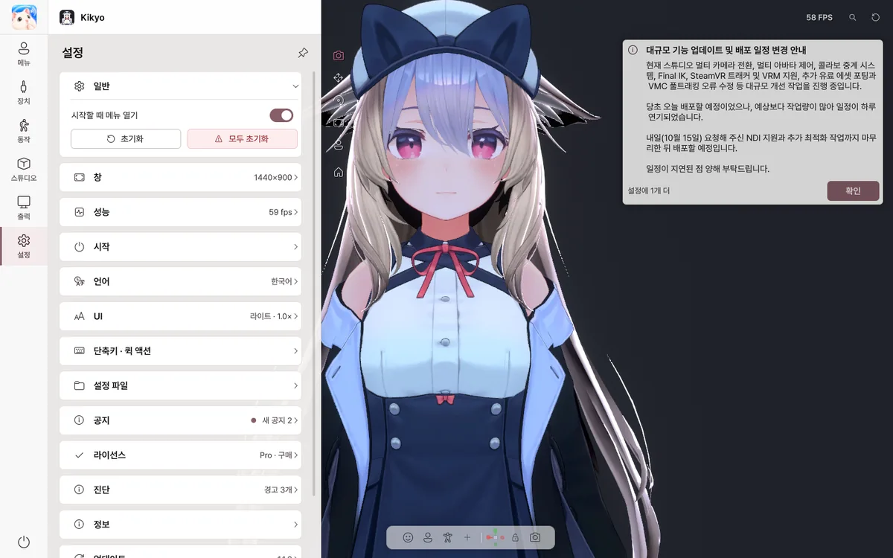
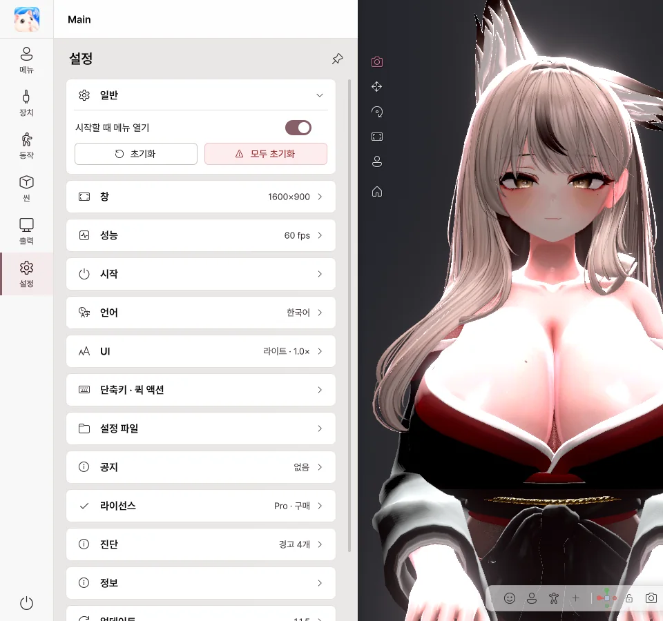
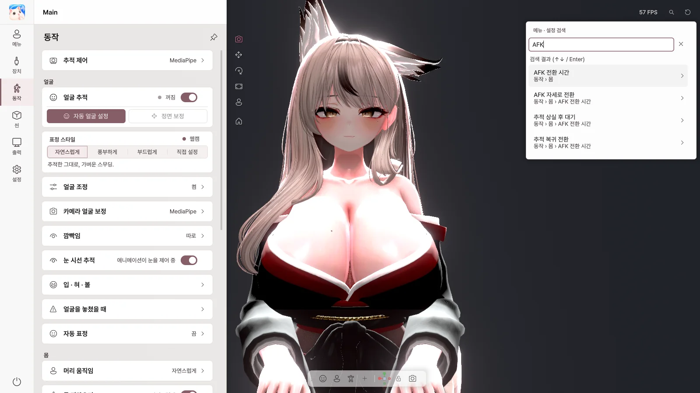
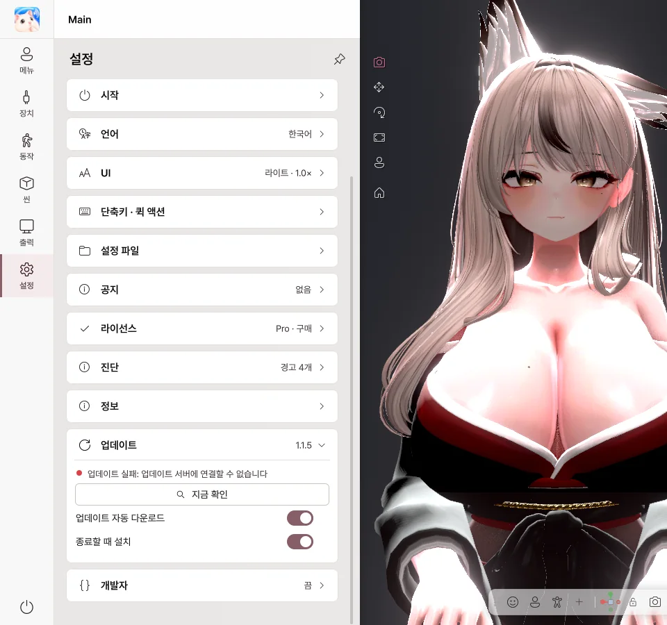
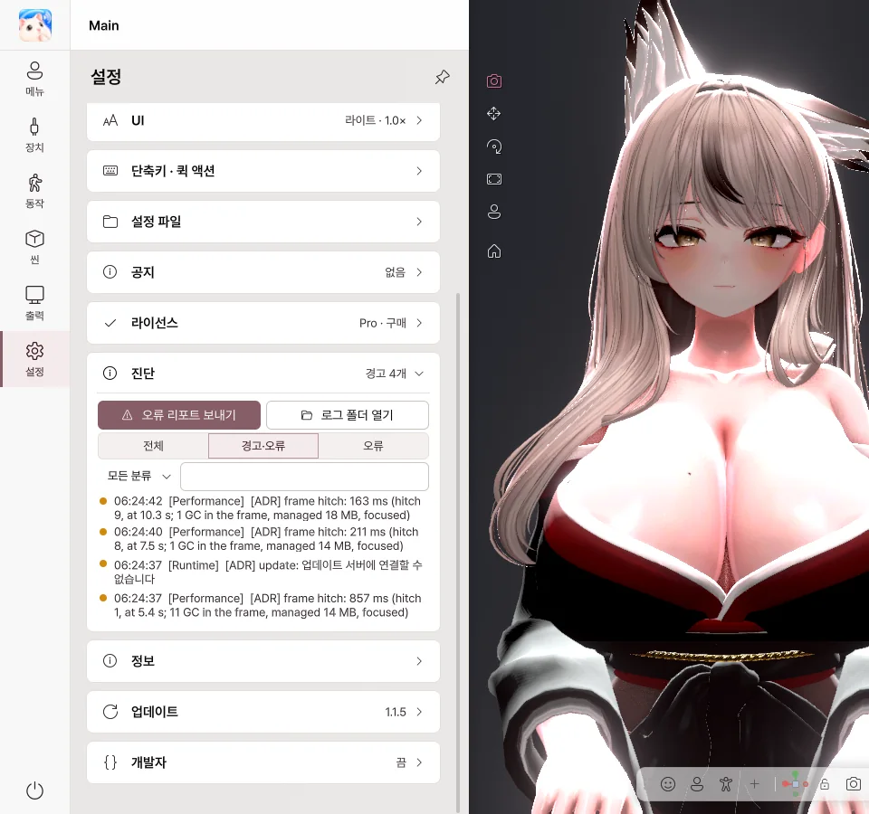

10. 설정
v2.0.0 성능·UI·업데이트 설정이 미치는 영향

| 옵션 | 변경하면 실제로 달라지는 것 |
|---|---|
| 앱 FPS 제한 | 높이면 카메라·물리가 더 자주 갱신되지만 CPU/GPU 부담이 커집니다. 낮추면 전력 사용은 줄지만 움직임이 덜 매끄럽습니다. 송출 중에는 송출 FPS 설정도 따로 확인하세요. |
| 화질/렌더 해상도 | 높이면 아바타 머리카락·눈·소품의 경계가 선명해지지만 GPU 부하가 증가합니다. 출력 해상도와 작업 창 해상도는 별개의 값일 수 있습니다. |
| 그림자/후처리 | 끄면 렌더링이 가벼워지지만 입체감과 광학 효과가 줄어듭니다. 일부 효과는 스튜디오별로 저장되므로 스튜디오 효과도 확인하세요. |
| 창 크기 · 항상 위 | Windows에서 창이 차지하는 크기와 다른 프로그램 위에 떠 있는 동작을 바꿉니다. OBS Spout2/NDI 화면 해상도를 바꾸는 설정이 아닙니다. |
| 닫기 버튼 동작 | X를 눌렀을 때 종료할지 트레이로 보낼지 고릅니다. 방송 중 트레이로 들어가면 송출이 계속될 수 있습니다. |
| UI 글자 크기/배율 | 버튼과 설정 글자를 크게 또는 작게 만듭니다. 화면이 좁으면 콘텐츠가 접히거나 스크롤이 늘어나므로 실제 사용하기 편한 값을 선택하세요. |
| 빠른 카메라 툴바 불투명도 | 높일수록 화면 아래 제어가 또렷하게 보이고, 낮출수록 아바타를 덜 가립니다. 호버 시에는 더 또렷하게 보일 수 있습니다. |
| 자동 업데이트 다운로드 | 켜면 업데이트를 미리 받고 종료 시 설치할 수 있습니다. 꺼도 프로그램 시작 시 최신 버전을 확인해 알림을 표시할 수 있습니다. |
| 오류 리포트 보내기 | 자동 상시 업로드가 아니라 사용자가 전송을 선택한 경우 진단 내용을 보내는 용도입니다. 재현 상황을 적으면 버그 수정에 도움이 됩니다. |
단축키는 프로그램 창이 뒤에 있어도 동작할 수 있어 게임 핫키와 충돌하지 않는 조합을 고르세요. 표정은 누르고 있을 때만 적용할지, 한 번 눌러 켜고 다시 눌러 끌지 결정할 수 있습니다. F13–F24 및 조합 키도 사용할 수 있습니다. 방송 장비(Stream Deck)에서 일반 단축키를 전송하는 경우에도 동일한 입력을 받을 수 있습니다.
설정 저장의 범위를 구분하세요. 아바타별 표정·카메라 프리셋·포즈는 아바타 프로필에, 스튜디오의 방·조명·촬영 카메라 구성은 스튜디오에 저장됩니다. 한 장면을 바꿨다고 다른 장면이 모두 같은 색으로 바뀌는 것은 아닙니다. 로컬 장치 환경이 바뀌면 연결할 카메라/마이크를 다시 선택해야 할 수 있습니다.
일반 · 창 · 성능

- 시작할 때 메뉴 열기 — 끄면 메뉴 없이 시작합니다.
- 창 — 창 크기, 전체 화면, 항상 위, X 버튼 동작을 정합니다.
- 성능 — 프레임 레이트와 화질을 정합니다. 낮추면 PC 부담이 줄어듭니다.
- 그림자 — 머리카락과 턱이 목과 가슴에 드리우는 그림자입니다. 끄면 GPU 부담이 줄어듭니다.
- 언어 — 한국어 · English · 日本語 · 简体中文
- UI — 테마, 패널 위치, 글자 크기를 바꿉니다.
메뉴와 설정 검색

상단 우측 돋보기에서 AFK, 미러, 언어, Spout2, 눈동자, 책상모드, 단축키 등 기능을 검색합니다. 결과를 고르면 메뉴·장치·동작·스튜디오·출력·설정 중 해당 페이지로 이동하고 접혀 있던 카드도 펼칩니다. AFK 시간 검색은 예전 설정 페이지가 아니라 동작 › 몸을 엽니다.
단축키
- + 단축키 추가를 누르고 동작과 키를 고릅니다.
- 게임 중이거나 Avatar Live가 뒤에 있어도 동작합니다.
- 다른 프로그램의 키 입력은 그대로 전달됩니다.
- 메뉴 버튼과 제스처는 누르는 동안 또는 눌러서 켜고 끄기를 고를 수 있습니다.
라이선스
현재 에디션을 확인합니다.
| 버튼 | 하는 일 |
|---|---|
| 다른 코드 입력 | 다른 라이선스로 바꿉니다. |
| Pro로 업그레이드 | BOOTH에서 구매한 업그레이드를 입력해 Pro로 바꿉니다. |
| 지금 확인 | 라이선스를 다시 확인합니다. |
진단 · 정보 · 업데이트
| 항목 | 하는 일 |
|---|---|
| 진단 › 오류 리포트 보내기 | 문제가 생겼을 때 설명과 로그를 보냅니다. 누를 때만 전송됩니다. |
| 정보 › 개선 사항 보내기 | 있었으면 하는 기능이나 고쳤으면 하는 점을 보냅니다. |
| 공지 | 새 공지는 시작할 때 한 번 보여 주고, 지난 공지는 설정에서 다시 볼 수 있습니다. |
| 로그 폴더 열기 | 로그 파일을 확인합니다. |
| 지금 확인 · 내려받기 | 새 버전을 확인하고 받습니다. |
| 다시 시작해서 설치 | 바로 업데이트합니다. 아바타와 설정은 그대로입니다. |
Avatar Live는 실행할 때마다 업데이트를 한 번 확인하고 새 버전이 있으면 초록색 알림을 표시합니다. 설정 › 업데이트 › 업데이트 자동 다운로드를 켜면 자동으로 내려받습니다. 설치는 종료할 때 설치 옵션이나 다시 시작해서 설치 버튼을 따릅니다. 문제가 있으면 BOOTH에서 새 버전을 다시 받아도 아바타와 설정은 유지됩니다.
업데이트 자동 확인과 다운로드

프로그램을 실행하면 새 버전이 있는지 한 번 자동으로 확인합니다. 자동 다운로드를 OFF로 설정해도 새 버전 확인과 알림은 계속됩니다. 설정의 업데이트 항목에서 직접 확인하거나 다운로드하고, 재시작 후 설치 또는 종료 시 설치를 선택할 수 있습니다. 아바타와 저장된 설정은 유지됩니다.
오류 리포트 보내기

오류가 생겼다면 설정 › 진단 › 오류 리포트 보내기에서 어떤 동작 중 문제가 발생했는지 적어 보내 주세요. 증상만 문의하면 정확한 원인을 찾기 어려울 수 있으므로 진단 자료와 재현 방법이 중요합니다.
문제 · 건의 보내기
- 사용 중에 버그나 문제가 있으면 설정 › 진단 › 오류 리포트 보내기로 알려 주세요. 어떤 상황이었는지 한두 줄 적어 주시면 원인을 찾는 데 큰 도움이 됩니다.
- 필요한 기능이나 개선 사항이 있으면 설정 › 정보 › 개선 사항 보내기로 보내 주세요. 보내 주신 의견은 업데이트 계획에 반영합니다.